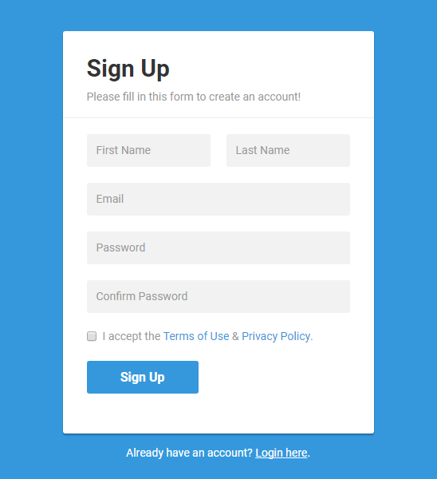

Description
 Firstly, we need to have gadgets, particularly mobile phones, Ipads, even laptops, and computers. This app will be available and free in Android and IOS, however, the Internet is required to operate the app. We also can download it on screen in our car. Next, we need to sign up for an account with our profile, id, and password. One of the most remarkable features is that we can register the training-driving course and then we can book the teacher and the time which will be suitable for us. This app has 450 questions which we need to study to pass the theoretical exam. All questions will be mixed and then one test is created for students to test themselves. There are two types of students who are local and remote. Local students can sign up and choose the package and timing, for remote students they can check for the nearby remote trainers. It is beneficial because students can book their time slots depending on their wish, it also provides secure payments due to the restricted management. Moreover, creating more employments is a great advantage which helps trainers can apply to find jobs.
 Another core feature of the navigation app is GPS which can locate our position. Their SDKs match the necessary API level, so they support our talented developers to make the targeted functions and tracking system quickly and in a cost-efficient way. We can easily check where our social networking (Facebook, Instagram) friends are traveling at the present. GPS navigation apps are useful advanced software solutions which solve real driver’s issues, like traffic congestion, weather changes, and efficient route planning. Notifications about the accidents, roadworks or police presence is announced immediately, also, it will give the best driving time suggestions for planned event. Owing to the intuitive interface, user-friendly, and fast, seamless connection, it is not difficult to run with the app or communicate with people. Driving will be made safe by voice notifications due to the fact that the user does not need to look at the online map at every turn. However, the sound of it may be distracted us, voice notifications can be adjusted or turned off. Furthermore, the app does not let the customers type on the way and it minimizes multiple potential dangers. Also, upon arrival, we can write reviews that is useful for others, rating a coffee house, car-washing service or a gas station according to our experiences and perceptions. If you prefer not to share your location for anyone, this app can operate in an invisible mode. Every user passes initial authorization, therefore, you can access only your friends and people who you trust, relying on their devices. They can see your location even when we set in invisible mode. Additional feature, this app will be provided updates, eliminated vulnerabilities, considered the customer’s wishes and added new features. Adding new roads to the map, giving useful pieces of advice, leaving multiple fair comments, active users collect points and get rewarded for them.
Another core feature of the navigation app is GPS which can locate our position. Their SDKs match the necessary API level, so they support our talented developers to make the targeted functions and tracking system quickly and in a cost-efficient way. We can easily check where our social networking (Facebook, Instagram) friends are traveling at the present. GPS navigation apps are useful advanced software solutions which solve real driver’s issues, like traffic congestion, weather changes, and efficient route planning. Notifications about the accidents, roadworks or police presence is announced immediately, also, it will give the best driving time suggestions for planned event. Owing to the intuitive interface, user-friendly, and fast, seamless connection, it is not difficult to run with the app or communicate with people. Driving will be made safe by voice notifications due to the fact that the user does not need to look at the online map at every turn. However, the sound of it may be distracted us, voice notifications can be adjusted or turned off. Furthermore, the app does not let the customers type on the way and it minimizes multiple potential dangers. Also, upon arrival, we can write reviews that is useful for others, rating a coffee house, car-washing service or a gas station according to our experiences and perceptions. If you prefer not to share your location for anyone, this app can operate in an invisible mode. Every user passes initial authorization, therefore, you can access only your friends and people who you trust, relying on their devices. They can see your location even when we set in invisible mode. Additional feature, this app will be provided updates, eliminated vulnerabilities, considered the customer’s wishes and added new features. Adding new roads to the map, giving useful pieces of advice, leaving multiple fair comments, active users collect points and get rewarded for them.
Tools, Technologies, and Skills Required
To operate this app, we must have the devices and download the app which has the name is Supporting Transportation App. After that, you need to sign up with our email address or social media accounts, such as Facebook, Instagram, and Twitter. We must set up our profile and if we want to study training-driving course, we need to charge a fee for the app, the price depends on your timing and vehicle which we are desirable.
I think that we must be professional about Java,C# and Swift programming languages.
The first vital software is Map and Navigation, particularly Mapbox’s powerful navigation SDKs and APIs. It can be utilized to implement offline and online map access, walk, car,bike, bus routes and lane instructions. Mapbox offers various advanced features and good performance. Authorization is a second essential software which can create a successful app. Safety within the system is guaranteed by an authorization process that can access only for approved individuals. Voice recognition system allows drivers use voice commands for creating routes. The unique tools, Google Cloud API, are applied to transform voice into text messages and vice versa. Social elements are vital for a successful app that becomes popular within the nearest years. In combination with navigation and Supporting Transportation map editors, the application will be more useful and functional. App is also implemented the necessary traits, including user profiles, likes, comments, additional features.